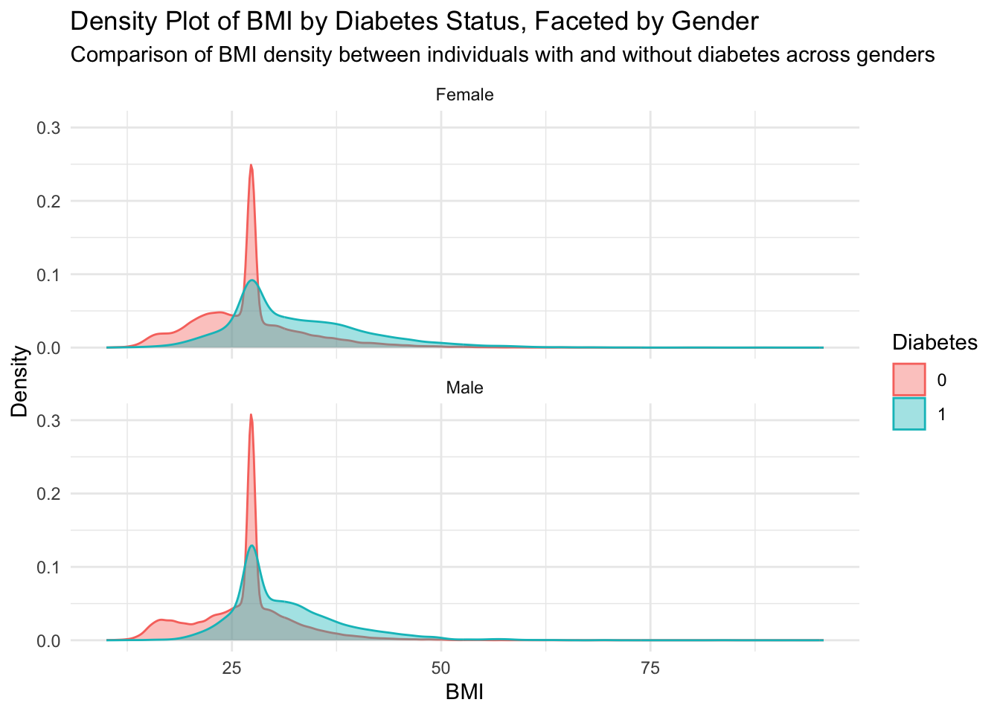
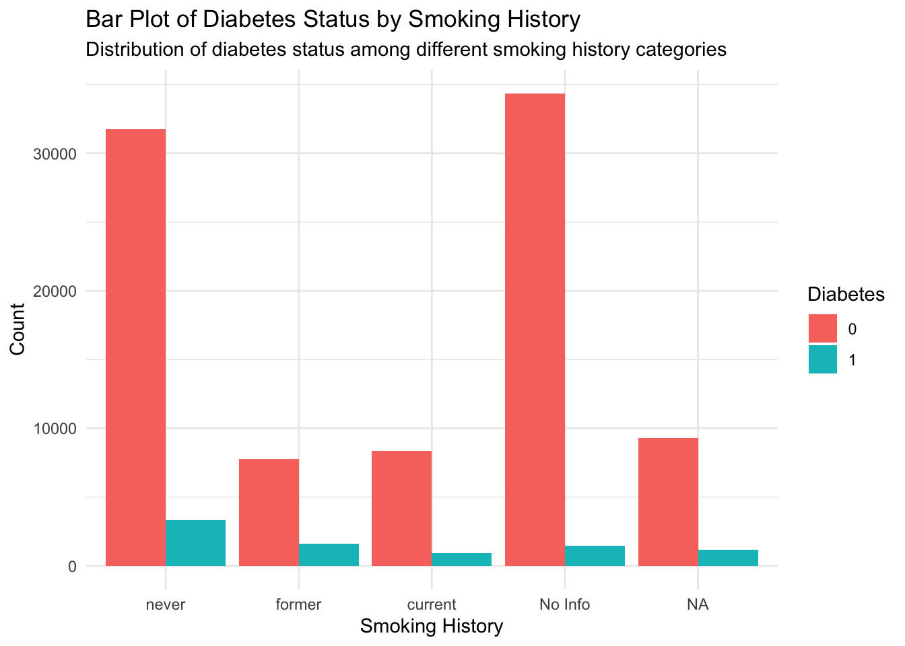

Callout 1: Background on Diabetes Prevalence Diabetes is a chronic disease that affects how your body turns food into energy. Over 133 million Americans are living with diabetes or prediabetes. Understanding the associated risk factors can help in finding patients with diabetes in early stage and start treatments earlier for better outcomes.
1. Introduction
This report provides an analysis of diabetes-related data to explore how different demographic and health factors may relate to diabetes. The goal is to uncover patterns that could offer insights into factors associated with diabetes prevalence, which may be of interest to those looking to understand how lifestyle and health metrics like BMI, blood glucose levels, and smoking history are connected to diabetes.
Intended Audience
This report is intended for the general public, including individuals interested in understanding diabetes-related data and factors associated with diabetes risk. The analysis is presented in a straightforward manner, avoiding complex statistical jargon, so that anyone with a basic understanding of health concepts can follow along and gain insights.
Data Source
I used Kaggle dataset by Choksi, which provides detailed health metrics for diabetes research (Choksi 2024). The data analyzed in this report comes from the “100,000 Diabetes Clinical Dataset” on Kaggle, contributed by Priyam Choksi. This dataset includes 16 demographic and health realated variables for 100,000 individuals and is designed to support diabetes-related research and predictive modeling.
2. Data Dictionary
Variable
Description
year
Year of data collection
gender
Gender of the individual
age
Age of the individual
location
Location or state where data was collected
race:AfricanAmerican
Indicator variable for African American race
race:Asian
Indicator variable for Asian race
race:Caucasian
Indicator variable for Caucasian race
race:Hispanic
Indicator variable for Hispanic race
race:Other
Indicator variable for other races
hypertension
Whether the individual has hypertension (1 = Yes, 0 = No)
heart_disease
Whether the individual has heart disease (1 = Yes, 0 = No)
smoking_history
Smoking history (e.g., never, former, current)
bmi
Body Mass Index of the individual
hbA1c_level
Average blood glucose level over the last 3 months
blood_glucose_level
Blood glucose level at the time of measurement
diabetes
Whether the individual has diabetes (1 = Yes, 0 = No)
3. Data Wrangling
#library(httpgd)#hgd()library(dplyr)
Attaching package: 'dplyr'
The following objects are masked from 'package:stats':
filter, lag
The following objects are masked from 'package:base':
intersect, setdiff, setequal, union
year gender age location
Min. :2015 Female:58552 Min. : 0.08 Length:100000
1st Qu.:2019 Male :41430 1st Qu.:24.00 Class :character
Median :2019 NA's : 18 Median :43.00 Mode :character
Mean :2018 Mean :41.89
3rd Qu.:2019 3rd Qu.:60.00
Max. :2022 Max. :80.00
hypertension heart_disease smoking_history bmi
Min. :0.00000 Min. :0.00000 never :35095 Min. :10.01
1st Qu.:0.00000 1st Qu.:0.00000 former : 9352 1st Qu.:23.63
Median :0.00000 Median :0.00000 current: 9286 Median :27.32
Mean :0.07485 Mean :0.03942 No Info:35816 Mean :27.32
3rd Qu.:0.00000 3rd Qu.:0.00000 NA's :10451 3rd Qu.:29.58
Max. :1.00000 Max. :1.00000 Max. :95.69
three_month_avg_glucose blood_glucose_level diabetes race
Min. :3.500 Min. : 80.0 0:91500 Length:100000
1st Qu.:4.800 1st Qu.:100.0 1: 8500 Class :character
Median :5.800 Median :140.0 Mode :character
Mean :5.528 Mean :138.1
3rd Qu.:6.200 3rd Qu.:159.0
Max. :9.000 Max. :300.0
bmi_category
Length:100000
Class :character
Mode :character
4. Visualization
1. Density Plot of BMI by Diabetes Status
diabetes_data <- diabetes_data %>%filter(!is.na(gender))ggplot(diabetes_data, aes(x = bmi, color =factor(diabetes), fill =factor(diabetes))) +geom_density(alpha =0.4) +labs(title ="Density Plot of BMI by Diabetes Status, Faceted by Gender",subtitle ="Comparison of BMI density between individuals with and without diabetes across genders",x ="BMI",y ="Density",fill ="Diabetes",color ="Diabetes" ) +theme_minimal() +facet_wrap(~ gender, nrow =2)

Callout 2: 2: Observation on BMI and Diabetes Status The density plot shows that people with diabetes tend to have higher BMI values compared to those without diabetes. There is no obvious difference between the distribution of BMI for males and female. This suggests a possible association between higher BMI and diabetes risk.
2. Bar Plot of Diabetes by Smoking History
ggplot(diabetes_data, aes(x = smoking_history, fill =factor(diabetes))) +geom_bar(position ="dodge") +labs(title ="Bar Plot of Diabetes Status by Smoking History",subtitle ="Distribution of diabetes status among different smoking history categories",x ="Smoking History",y ="Count",fill ="Diabetes" ) +theme_minimal()

Callout 3: Observation on Smoking History and Diabetes Status There doesn’t appear to be a strong visible association between smoking history and diabetes status in this dataset, as each smoking category shows similar proportions of individuals with and without diabetes.
3. Scatter Plot of HbA1c Level vs. Blood Glucose Level, colored by Diabetes Status
diabetes_data <- diabetes_data %>%filter(year ==2019)# Facet-wrapped scatter plot by raceggplot(diabetes_data, aes(x = three_month_avg_glucose, y = blood_glucose_level, color =factor(diabetes))) +geom_point(alpha =0.7) +labs(title ="Scatter Plot of HbA1c Level vs. Blood Glucose Level by Race",x ="HbA1c Level (Three months average glucose level)",y ="Blood Glucose Level",color ="Diabetes" ) +theme_minimal()
5. Model
6. Conclusion
7. Function Summary
# Filter out rows with missing values in relevant columnsclean_diabetes_data <- diabetes_data %>%filter(!is.na(age), !is.na(gender), !is.na(three_month_avg_glucose), !is.na(bmi), !is.na(smoking_history), !is.na(hypertension), !is.na(heart_disease), !is.na(race))# Fit logistic regression modelmodel <-glm(diabetes ~ age + gender + three_month_avg_glucose + bmi + smoking_history + hypertension + heart_disease + race, data = clean_diabetes_data, family ="binomial")summary(model)
Call:
glm(formula = diabetes ~ age + gender + three_month_avg_glucose +
bmi + smoking_history + hypertension + heart_disease + race,
family = "binomial", data = clean_diabetes_data)
Coefficients:
Estimate Std. Error z value Pr(>|z|)
(Intercept) -21.871731 0.276031 -79.236 < 2e-16 ***
age 0.048141 0.001175 40.965 < 2e-16 ***
genderMale 0.332187 0.037162 8.939 < 2e-16 ***
three_month_avg_glucose 2.307939 0.037018 62.347 < 2e-16 ***
bmi 0.088573 0.002623 33.770 < 2e-16 ***
smoking_historyformer 0.056968 0.050724 1.123 0.2614
smoking_historycurrent 0.232766 0.057624 4.039 5.36e-05 ***
smoking_historyNo Info -0.551570 0.047169 -11.693 < 2e-16 ***
hypertension 0.742824 0.047706 15.571 < 2e-16 ***
heart_disease 0.778963 0.061855 12.593 < 2e-16 ***
raceAsian -0.049441 0.057587 -0.859 0.3906
raceCaucasian -0.048401 0.056994 -0.849 0.3957
raceHispanic -0.072439 0.057185 -1.267 0.2052
raceOther -0.101513 0.057692 -1.760 0.0785 .
---
Signif. codes: 0 '***' 0.001 '**' 0.01 '*' 0.05 '.' 0.1 ' ' 1
(Dispersion parameter for binomial family taken to be 1)
Null deviance: 40308 on 71388 degrees of freedom
Residual deviance: 21006 on 71375 degrees of freedom
AIC: 21034
Number of Fisher Scoring iterations: 8
# Add predicted probabilities to the datasetclean_diabetes_data$predicted_prob <-predict(model, type ="response")# Subsample the data for visualization (to avoid overcrowding)subset_data <- clean_diabetes_data %>%sample_n(500)# Plot predicted probabilities against a key variableggplot(subset_data, aes(x = three_month_avg_glucose, y = predicted_prob, color = diabetes)) +geom_point(alpha =0.5) +geom_smooth(method ="loess", se =FALSE, color ="black") +labs(title ="Predicted Probability of Diabetes by HbA1c Level",x ="HbA1c Level (Three months average glucose level)",y ="Predicted Probability of Diabetes" ) +theme_minimal()
`geom_smooth()` using formula = 'y ~ x'
library(ggplot2)ggplot(clean_diabetes_data, aes(x = three_month_avg_glucose, y = bmi, fill = diabetes)) +geom_tile(alpha =0.7) +labs(title ="Heatmap of HbA1c Level and BMI",x ="HbA1c Level",y ="BMI",fill ="Diabetes" ) +theme_minimal()
 Image Credit:
Image Credit: